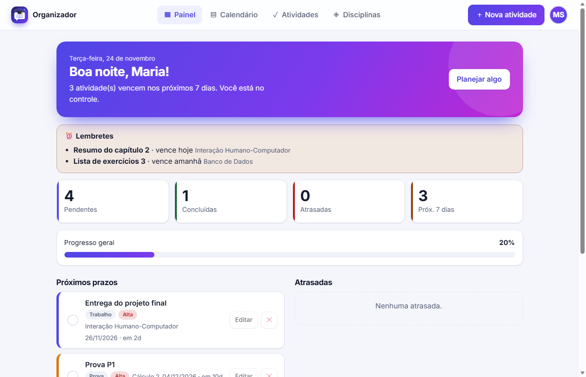
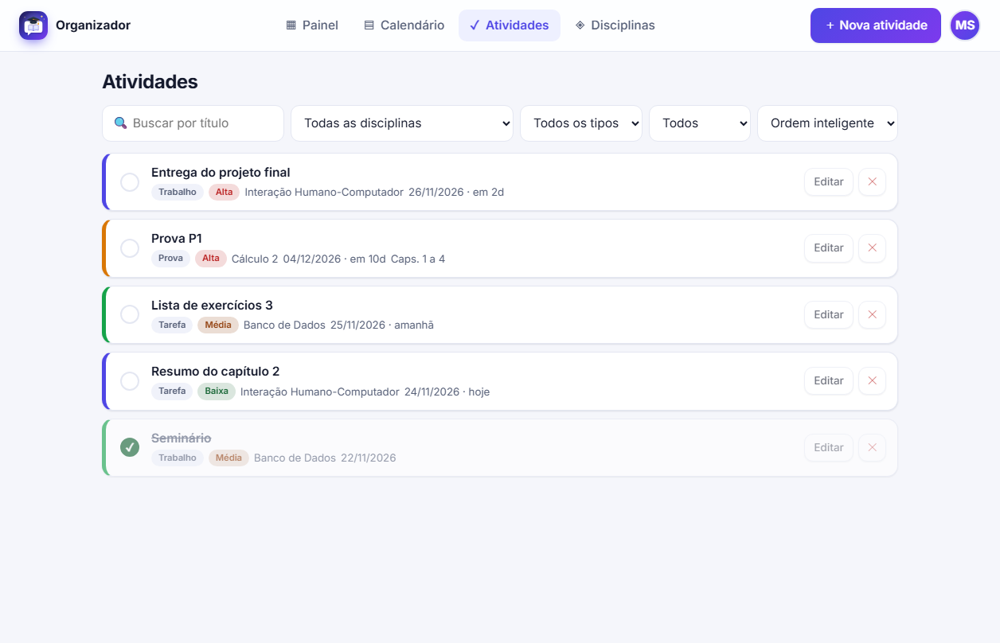
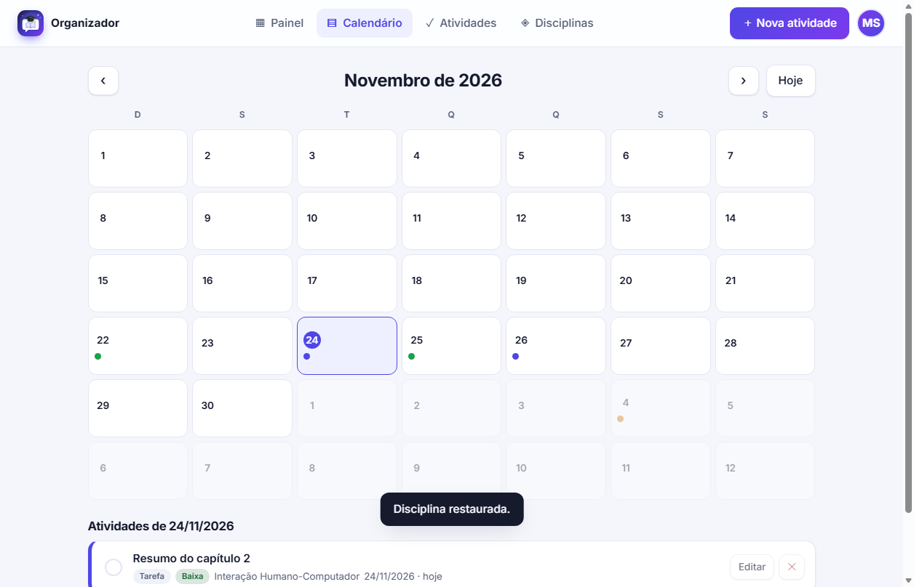
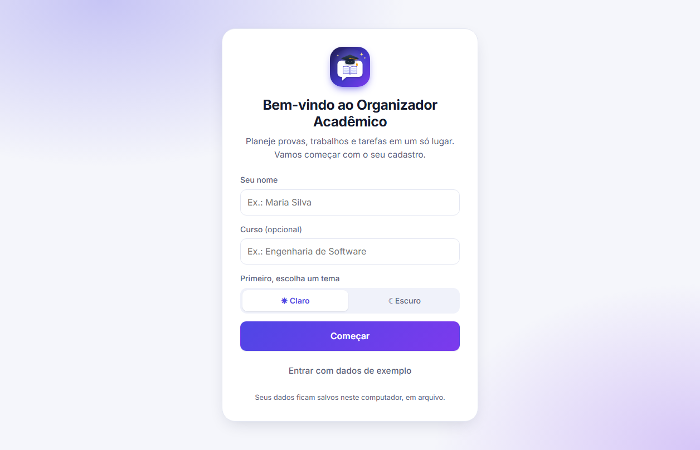
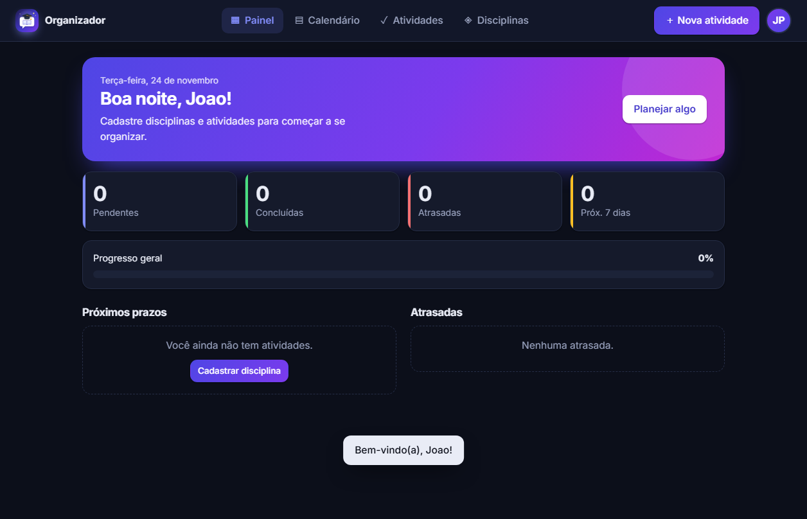
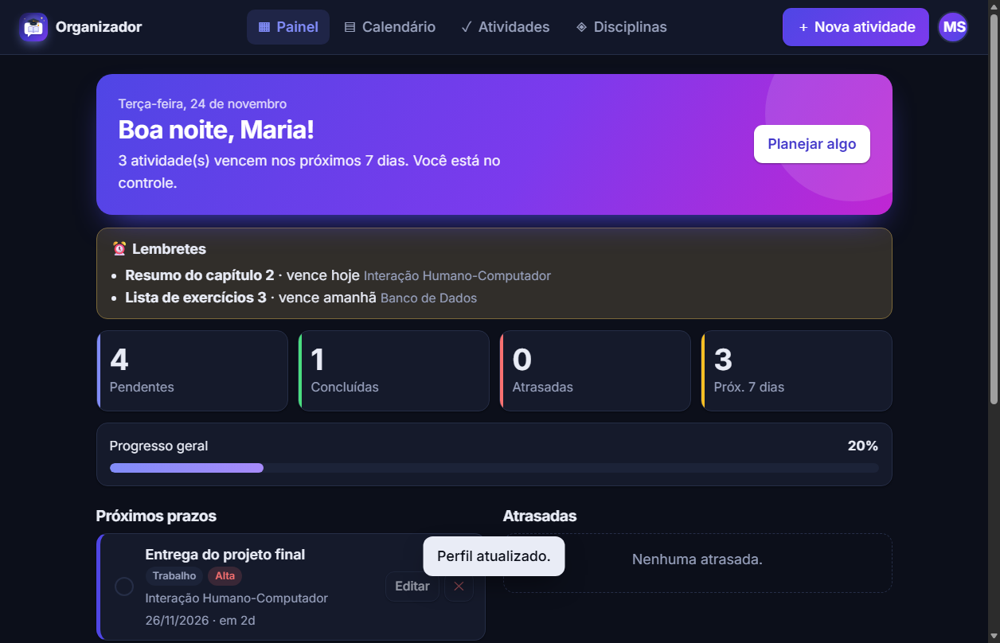
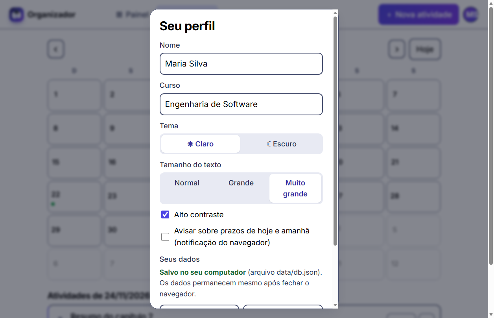
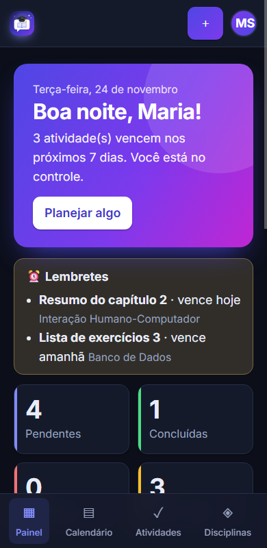
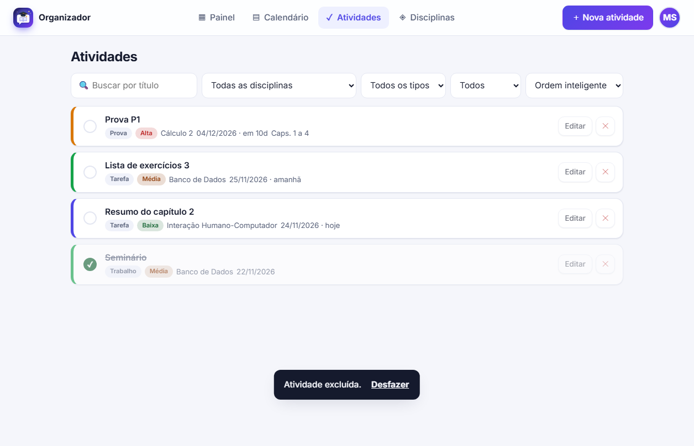

Organizador Acadêmico Inteligente
Relatório de apoio para a apresentação do Projeto Final
Disciplina de Interação Humano-Computador (IHC)
Instituto de Informática, Universidade Federal de Goiás
Professor: Dirson S. Campos
Relatório de apoio para a apresentação do Projeto Final
Disciplina de Interação Humano-Computador (IHC)
Instituto de Informática, Universidade Federal de Goiás
Professor: Dirson S. Campos
Este relatório reúne o que você precisa para montar os slides: o que o sistema faz, por que foi desenhado assim, como cada decisão se liga a princípios de IHC, o que já foi verificado e o que ainda falta. No final há uma proposta de roteiro de slides, um roteiro de demonstração ao vivo e perguntas prováveis da banca.
| Item | Descrição |
|---|---|
| Proposta | Aplicação web de organização acadêmica para estudantes universitários: cadastrar disciplinas, registrar provas e trabalhos, organizar tarefas por prazo e prioridade, ver os compromissos em um calendário e acompanhar um painel de pendentes e concluídas. |
| Público-alvo | Estudantes universitários. |
| Objetivo principal | Facilitar o planejamento da rotina acadêmica e o acompanhamento de prazos e atividades, evitando esquecimentos. |
| Tipo | Aplicação para a Web, acessada pelo navegador. |
| "Dinâmico" | A interface reage às ações do usuário sem recarregar a página: criar, editar, concluir, filtrar, trocar de tela e de tema, tudo atualiza na hora. Os dados persistem entre sessões. |
| Tecnologia | HTML, CSS e JavaScript puros, sem frameworks. Servidor local em Node.js sem dependências externas, que grava os dados em um arquivo JSON. Service worker para funcionar offline. |

| Área | O que o usuário faz |
|---|---|
| Cadastro do aluno | Na primeira visita informa nome, curso (opcional) e tema. A partir daí a interface o chama pelo nome. Pode editar tudo depois, no perfil. |
| Painel | Saudação por horário, mensagem que muda conforme a situação, lembretes de hoje e amanhã, quatro contadores, barra de progresso geral, lista de próximos prazos e lista de atrasadas. |
| Atividades | Cria, edita, conclui e exclui provas, trabalhos e tarefas, com disciplina, prioridade, prazo e observações. Busca por título e filtros por disciplina, tipo e situação. Três ordenações, entre elas a "inteligente". |
| Disciplinas | Cadastra disciplinas com uma cor própria. A cor aparece em toda atividade e no calendário. |
| Calendário | Visão mensal com pontos coloridos nos dias com compromisso. Clicar no dia lista as atividades dele e já pré-preenche a data ao criar uma nova. |
| Desfazer | Excluir atividade ou disciplina é imediato e mostra "Desfazer" por 7 segundos. |
| Lembretes | Destaque no painel para o que vence hoje e amanhã. Opcionalmente, notificação do navegador uma vez por dia. |
| Acessibilidade | Três tamanhos de texto, modo de alto contraste, tema claro e escuro, navegação por teclado, respeito a "reduzir movimento". |
| Dados | Salvos em arquivo no computador do usuário. Exportar e importar backup em JSON. Funciona offline. |
Cada atividade recebe uma pontuação: urgência do prazo (atrasada vale 100; depois, 30 menos 2 pontos por dia restante, nunca abaixo de 0) mais 10 vezes a prioridade (1 a 3) mais um bônus por tipo (prova 8, trabalho 4, tarefa 0). O resultado reduz a decisão do usuário: o que está no topo da lista é o que merece atenção primeiro. Isso é uma regra simples e explicável, não inteligência artificial; na apresentação, chame de "ordenação inteligente baseada em regras".


| Persona (exemplo) | Marina, 20 anos, 4º período de Engenharia de Software. Cursa cinco disciplinas, mora com a família e usa o notebook e o celular. Hoje anota prazos no grupo de mensagens da turma e em um caderno. |
|---|---|
| Necessidades | Ver tudo o que vence na semana em um só lugar; saber o que fazer primeiro; não perder prazo por esquecimento; usar sem curva de aprendizado. |
| Frustrações | Prazos espalhados em várias fontes; descobrir tarde que algo venceu; aplicativos complexos demais para uso rápido. |
| Cenário | Domingo à noite, Marina abre o Organizador. O painel mostra dois lembretes para segunda e terça, e a lista "Próximos prazos" já vem ordenada. Ela cadastra a prova de Cálculo, escolhe o dia no calendário, marca prioridade alta e fecha. Na quarta, conclui uma lista de exercícios com um clique e vê a barra de progresso avançar. |
| Decisão | Justificativa em IHC |
|---|---|
| Tela de boas-vindas com nome | Cria vínculo e personaliza a experiência (saudação, avatar com iniciais). Pede só o essencial: o nome é o único campo obrigatório, para reduzir a barreira de entrada. Oferece "dados de exemplo" para o usuário explorar sem esforço. |
| Painel como tela inicial | Responde primeiro à pergunta do estudante: "o que preciso fazer agora?". Apresenta resumo antes de detalhe. |
| Cor por disciplina | Reconhecimento visual rápido. A cor nunca é a única informação: o nome da disciplina sempre aparece escrito. |
| Prazo em linguagem natural | "vence hoje", "amanhã", "em 3d", "atrasada 2d" em vez de só datas. Reduz o esforço mental de calcular. |
| Desfazer no lugar de confirmar | Um diálogo "Tem certeza?" interrompe e é respondido no automático. Excluir na hora com desfazer é mais rápido e mais seguro, pois o erro é reversível. |
| Estados vazios com ação | Quando não há nada, a tela mostra o próximo passo em um botão ("Cadastrar disciplina", "Criar atividade", "Limpar filtros"). Evita beco sem saída. |
| Feedback para cada ação | Aviso curto confirma o que aconteceu ("Atividade criada", "Concluída!"). Barra de progresso e contadores mudam na hora. |
| Transições curtas | Entrada suave das telas, resposta ao passar o mouse, checkbox animado. Dão continuidade e sensação de resposta. Tudo é desligado se o usuário pede "reduzir movimento". |
| Navegação inferior no celular | As abas ficam ao alcance do polegar. O layout é responsivo em um único código. |
| Dados no computador do usuário | Privacidade e propriedade: nada sai da máquina. O perfil diz onde os dados estão salvos, o que reforça a transparência. |


Esta é a tabela mais útil para a apresentação: cada heurística ligada a algo que existe no sistema. As marcas "parcial" indicam o que ainda não foi feito.
| # | Heurística | Onde aparece no sistema |
|---|---|---|
| 1 | Visibilidade do estado do sistema | Barra de progresso e contadores no painel; avisos após cada ação; aba atual destacada; selo "atrasada"; o perfil informa onde os dados estão salvos; aviso quando o servidor cai e os dados passam a ficar só no navegador. |
| 2 | Correspondência com o mundo real | Vocabulário do estudante (disciplina, prova, trabalho, prazo); calendário mensal familiar; datas no formato dd/mm/aaaa; "vence amanhã". |
| 3 | Controle e liberdade do usuário | Desfazer exclusão; Cancelar em todos os diálogos; reabrir atividade concluída; editar tudo; Cancelar no perfil desfaz até os ajustes de acessibilidade já visualizados. |
| 4 | Consistência e padrões | Mesmo componente de item em todas as telas; mesmas cores para ações iguais; padrões web conhecidos (abas, diálogos, caixa de seleção). |
| 5 | Prevenção de erros | Campos obrigatórios e limites de tamanho; seletor de data em vez de digitação; o sistema leva à tela de disciplinas se não houver nenhuma; importar backup valida o formato e pede confirmação; "Apagar tudo" pede confirmação. |
| 6 | Reconhecimento em vez de memorização | Filtros e opções sempre visíveis; lembretes e próximos prazos no painel; cor e nome da disciplina em cada item. |
| 7 | Flexibilidade e eficiência de uso | Ordem inteligente; busca e filtros; clique no dia do calendário pré-preenche a data; botão "Nova atividade" sempre visível. Parcial: não há atalhos de teclado. |
| 8 | Estética e design minimalista | Poucos elementos por tela, hierarquia clara, espaço em branco, uma cor de destaque, tema escuro. |
| 9 | Ajudar a reconhecer, diagnosticar e corrigir erros | Mensagens em linguagem simples ("Arquivo de backup inválido", "Cadastre uma disciplina primeiro", "Servidor indisponível. Salvando só no navegador"); estados vazios que indicam a saída. |
| 10 | Ajuda e documentação | Parcial: não há tela de ajuda. A orientação está embutida: texto de boas-vindas, estados vazios e a explicação sobre armazenamento no perfil. |
aria-label).role="progressbar" e valores; avisos em região aria-live, lidos por leitores de tela; aba atual marcada com aria-current.Razões calculadas pela fórmula de luminância relativa da WCAG 2.x. O mínimo para texto normal no nível AA é 4,5:1.
| Par de cores | Tema claro | Tema escuro |
|---|---|---|
| Texto principal sobre fundo | 15,98 | 16,19 |
| Texto principal sobre cartão | 17,25 | 14,65 |
| Texto secundário sobre cartão | 6,17 | 6,73 |
| Texto secundário sobre fundo | 5,72 | 7,43 |
| Aba ativa (cor de destaque sobre fundo suave) | 5,55 | 4,98 |
| Selo verde (concluído/baixa) | 5,56 | 7,10 |
| Selo laranja (média) | 5,50 | 7,38 |
| Selo vermelho (alta/atrasada) | 4,93 | 4,96 |
| Botão primário (branco sobre roxo) | 6,29 e 5,70 (as duas pontas do gradiente, iguais nos dois temas) | |


localStorage e, se o servidor está ativo, para o arquivo data/db.json, com gravação atômica (arquivo temporário e renomeação).atualizado), então edições feitas offline não se perdem.index.html, css/, js/ e public/; valida o formato antes de gravar; limita o tamanho do corpo da requisição; o conteúdo digitado pelo usuário é escapado antes de ir para a tela.localStorage. A fonte Inter vem do Google Fonts: é preciso rede na primeira visita para baixá-la; sem ela, o navegador usa a fonte do sistema.Como rodar: dar dois cliques em iniciar.bat ou executar node server.js e abrir http://localhost:3000. Abrir o index.html direto funciona, mas só com localStorage e sem modo offline.
Foram executados 35 testes automatizados de interface em um navegador Edge real (modo headless), controlado por script. Resultado: 35 de 35 passaram, sem nenhum erro de JavaScript. Eles cobrem:
server.js, data/ e caminhos com ../ são bloqueadas; os dados sobrevivem a reinício.

Esta é a parte de maior valor para a nota e ainda não foi feita. Abaixo, um protocolo pronto. Com 5 participantes costuma-se encontrar cerca de 85% dos problemas de usabilidade (Nielsen e Landauer, 1993).
data/db.json antes de cada pessoa) e tela do participante gravada, se ele concordar.| # | Tarefa dada ao participante | Sucesso quando |
|---|---|---|
| T1 | Crie seu cadastro e cadastre a disciplina "Cálculo 2". | Disciplina aparece na lista. |
| T2 | Registre uma prova de Cálculo 2 para daqui a 5 dias, com prioridade alta. | Atividade criada com tipo, data e prioridade corretos. |
| T3 | Marque uma tarefa como concluída. | Item fica concluído e o progresso sobe. |
| T4 | Descubra o que vence nesta semana. | Aponta lembretes, próximos prazos ou calendário. |
| T5 | Exclua uma atividade por engano e recupere. | Usa "Desfazer". |
| T6 | Deixe o texto maior e ative o tema escuro. | Abre o perfil e altera ambos. |
| Tarefa | Concluiu? (S/N) | Tempo (s) | Erros / hesitações | Comentário |
|---|---|---|---|---|
| T1 | ||||
| T2 | ||||
| T3 | ||||
| T4 | ||||
| T5 | ||||
| T6 |
Ao final, peça que o participante responda cada afirmação de 1 (discordo totalmente) a 5 (concordo totalmente).
Se não for possível testar com 5 pessoas, teste com 2 ou 3 e diga o tamanho real da amostra. Nunca invente números.
Doze slides, para cerca de 10 a 12 minutos. Ajuste ao tempo que o professor der.
iniciar.bat. Mostrar a tela de boas-vindas e cadastrar o nome.data/db.json com dados de exemplo (use "Entrar com dados de exemplo"); tenha as capturas deste relatório como plano B; confirme que o Node.js está instalado.| Pergunta | Resposta sugerida |
|---|---|
| Por que não usaram um framework? | O escopo é pequeno e o foco é a experiência do usuário. Código simples facilita a manutenção, carrega rápido e dispensa instalação de dependências. |
| Isso é inteligência artificial? | Não. A "ordem inteligente" é uma regra explicável (prazo, prioridade e tipo). Preferimos uma regra transparente a uma caixa-preta, já que o usuário precisa confiar na ordem. |
| E se o usuário limpar o navegador? | Com o servidor local, os dados ficam em arquivo e não dependem do navegador. Há também exportação e importação de backup. |
| Funciona com vários usuários? | Hoje é de uso pessoal, um perfil por instalação. Contas e sincronização estão nos próximos passos. |
| Como garantiram a acessibilidade? | Medimos o contraste por fórmula da WCAG, corrigimos o que falhou, oferecemos texto maior e alto contraste e testamos o uso por teclado. Cite a pontuação do Lighthouse só se vocês a rodarem. |
| Quais heurísticas vocês não atenderam totalmente? | Flexibilidade (faltam atalhos de teclado) e ajuda e documentação (falta tela de ajuda). Assumir isso com clareza costuma ser bem recebido. |
| O que o teste de usabilidade mudou? | Responda com o achado real do grupo. Exemplo de formato: "Dois de cinco participantes não acharam o botão X; mudamos para Y." |
| Arquivo | Função |
|---|---|
index.html | Estrutura das telas e diálogos. |
css/style.css | Visual, temas, transições, responsividade, alto contraste. |
js/app.js | Lógica: estado, telas, persistência, perfil, desfazer, lembretes. |
server.js, iniciar.bat | Servidor local e atalho de inicialização. |
sw.js, manifest.webmanifest | Modo offline e instalação como aplicativo. |
public/logo.svg | Logo e ícone. |
data/db.json | Dados do usuário (criado ao usar; não vai para o repositório). |
registro.md | Transcrição de cada pedido e resposta da conversa de desenvolvimento. |